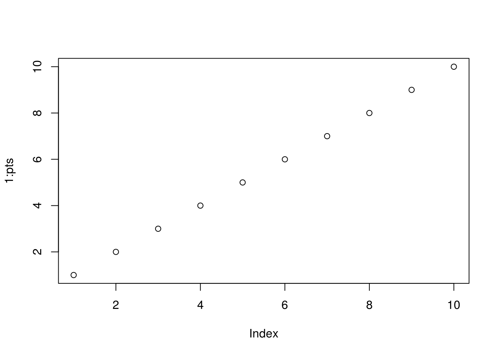
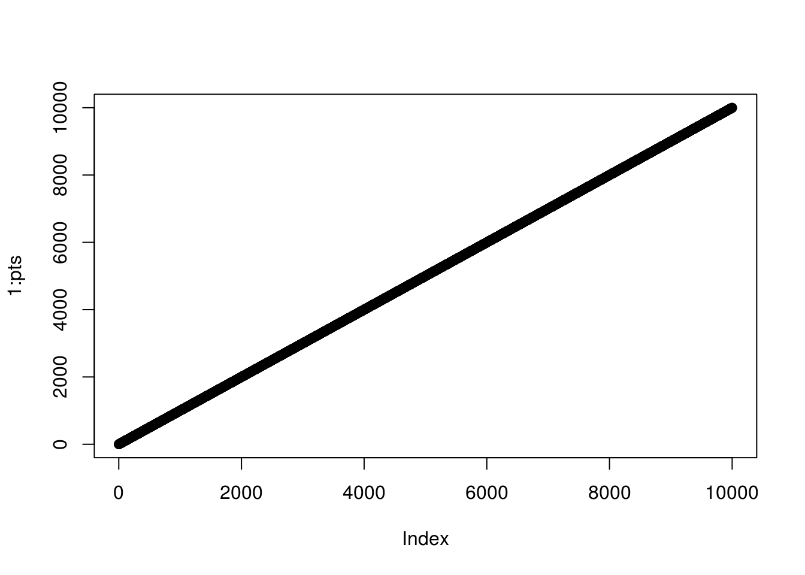

Chapter 6 Security
The majority of R programmers have not been trained to give much attention to the security of the code that they write. This is for good reason since running R code on your own machine with no external input gives little opportunity for attackers to leverage your R code to do anything malicious. However, as soon as you expose an API on a network, your concerns and thought process must adapt accordingly.
There are a variety of factors and attacks that you should consider when developing your Plumber APIs, but the attention you give to each will vary based on the audience of your API. On one extreme, if your API is running on an internal server on your own network and uses authentication to restrict access to only a handful of trusted users, you may be justified in overlooking some of these attack vectors. On the other hand, if your Plumber API is available on the Internet with no authentication, then you should seriously consider each of these potential vulnerabilities and convince yourself that you have properly accounted for each.
6.1 Networking & Firewalls
From a networking standpoint, there are two fundamentally different approaches for developing R code.
- You can develop locally using a tool like RStudio Desktop. In this case, the R session (and any Plumber APIs that you
run()) will be housed on your local machine. - You can develop on a remote machine using a tool like RStudio Server. Here, the R session is running on a remote server accessed across a network.
In the first case, there’s typically very little to consider from a networking perspective. Your APIs will be accessible at http://127.0.0.1:8000 by default (localhost is synonymous with the local IP address 127.0.0.1) and you likely won’t need to concern yourself with firewalls or network proxies.
In the second case, however, you may need to consider the network environment in between yourself and the server running the API. These are the same considerations you’ll need to make when hosting an API on a server for production use. In particular, you should investigate whether or not there are any firewalls between the server hosting the Plumber API and the clients that you want to be able to connect.
Firewalls are a way to block undesired network traffic. Most desktop computers and many servers come with firewalls enabled out-of-the-box. This means that if you want to expose your API running on port 8000, you will need to configure your firewall to accept incoming connections on that port. Firewalls can also be configured on other network intermediaries, so you may need to configure multiple firewalls to allow traffic through in order to expose the desired port to your API clients.
6.2 Denial Of Service (DoS)
Denial of service (DoS) attacks are employed in order to temporarily shut down a server or service by overwhelming it with traffic. A DoS scenario could be caused by a single ignorant user unintentionally making a request that could ask the server to do some impossible task, or could be intentionally introduced by a malicious actor leveraging a vast number of machines to repeatedly make requests that are expensive for the server to respond to. The later form is often called a distributed denial of service attack (or DDoS) and typically requires special infrastructure and network capacity that is beyond the scope of what we’ll discuss here.
However, there are practices that you should employ when designing your Plumber API to put safety guards around the work that an API request might instigate.
#' This is an example of an UNSAFE endpoint which
#' is vulnerable to a DOS attack.
#' @get /
#' @png
function(pts=10) {
# An example of an UNSAFE endpoint.
plot(1:pts)
}The expected output here is a harmless plot.

This plot takes a negligible amount of time to create.
However, plots with more points will take more time to create.

This plot, with 10,000 points added, took 0.511 seconds to generate. While that doesn’t sound like much, if we exposed this API publicly on the Internet, an attacker could easily generate enough traffic on this endpoint to overwhelm the Plumber process. Even worse, an attacker could make a request on this endpoint with millions or billions of points which might cause our server to run out of memory or consume so much CPU that it deprives other important system resources. Either case could result in our Plumber process crashing altogether.
The solution, in this case, is to ensure that we have reasonable safety guards in place for any user input.
#' This is an example of an safe endpoint which
#' checks user input to avoid a DOS attack
#' @get /
#' @png
function(pts=10) {
if (pts > 1000){
stop("pts must be < 1,000")
}
plot(1:pts)
}Here you can see that we only allow the user to request a graph with up to 1,000 points. Any requests exceeding that limit will immediately be terminated without any further computation.
You should be very attentive to the resources that could be consumed by any of your filters or endpoints. Consider the various values that a user could provide for each of your API endpoint’s parameters and ensure that the behavior of the system is reasonable in those cases. For API endpoints that do require extensive computation, consider how you could protect those endpoints (perhaps only exposing them for authenticated users) to prevent a malicious user from abusing the system.
6.3 Sanitization & Injection
Any time you accept input from a user in your code, you should plan for the worst-case scenario. If, for example, your API endpoint allows the user to specify the name of a file that should be read out of a particular directory and then returns its contents, you might naively implement it like so.
#' This is an example of an UNSAFE endpoint which
#' does not sanitize user input
#' @get /
function(file) {
# An example of an UNSAFE endpoint.
path <- file.path("./datasets", file)
readLines(path)
}Unfortunately, this API endpoint does not properly sanitize the user input. The user could set the file parameter to ../plumber.R and now the endpoint would return the source code of your Plumber API. Of course they could just as easy attempt to read other files that might contain API keys or other sensitive data.
One solution in this case is to strip all special characters off of the user input which will prevent users from being able to escape into a different directory.
#' This is an example of an endpoint which
#' checks user input.
#' @get /
function(file) {
# Strip all "non-word" characters from user input
sanitizedFile <- gsub("\\W", "", file)
path <- file.path("./datasets", sanitizedFile)
readLines(path)
}File paths are not the opportunity for malicious input to do damage to your system, however. Another way in which user input can be dangerous is an attack known as “cross site scripting,” or “XSS.” This attack can be leveraged whenever user input may be rendered in a user’s browser. For instance if you had an endpoint which allows users to comment on a page and then later displays those comments to other users, an attacked could craft a comment such as:
"This is a comment with JavaScript! <script>alert('I could do something bad here!');</script>As you can see, the comment has JavaScript embedded within it, in this case used to popup a message to the user. Of course JavaScript could be used in other harmful way by redirecting your users to a malicious site, for instance, or uploading data that they have special access to on your server to some other destination. Any user input that might be included on an HTML page should be properly escaped (see htmltools::html_escape for help).
Lastly, user input can be used in an “injection attack,” in which the user injects malicious commands that might be sent to another system. The best known in this family are SQL injection attacks, in which user input that is meant to be included in a SQL query to be executed against a database might contain additional SQL commands that could leak data or do damage to your database. Further details about SQL injection attacks and mitigation strategies in R are available here.
In summary, be sure to separate “trusted” from “untrusted” objects in your API implementation. Anything which the user provides should be considered “untrusted” until it has been escaped or sanitized. At that point you can consider the object to be “trusted” and proceed to take further actions on it.
6.4 Cross-Origin Resource Sharing (CORS)
// TODO
6.5 Cross-Site Request Forgery (CSRF, or XSRF)
// TODO